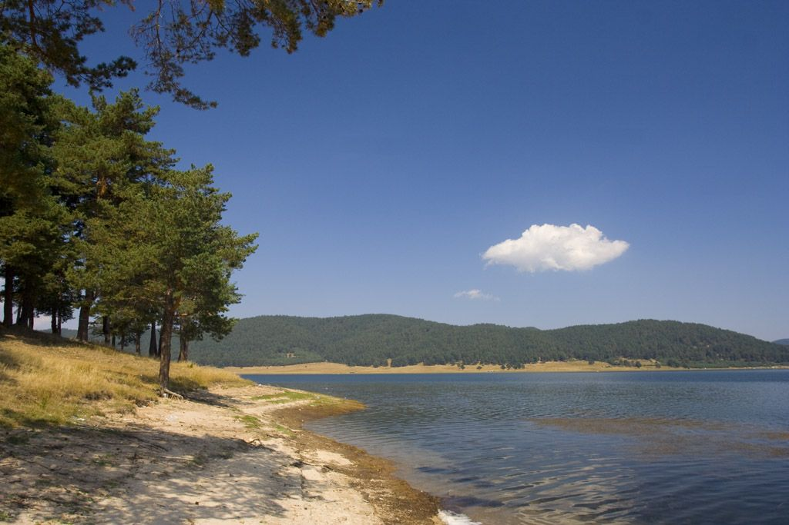

Четвъртия язовир който ще разгледаме е язовир Батак
Батак е язовир в Южна България, разположен в землището на град Батак. Разположен е в Западните Родопи, област Пазарджик, отстои на 4 km от Батак, на 7 km от Ракитово и на 19 km от Велинград. Използва се за туризъм, с възможност за риболов целогодишно. На западния бряг на язовира се намира планинският курорт „Цигов чарк“. Близо до Цигов чарк, в югозападната част на язовира се намира и остров Голака, който е с надморска височина 1108 m и с площ около 2,2 – 3,0 ha. А на другия бряг е летовище „Дъното“ (община Пещера), което е по-тихо и спокойно от „Цигов чарк“ и съвсем близо до летовище „Свети Константин“.
Обратно към главната страница